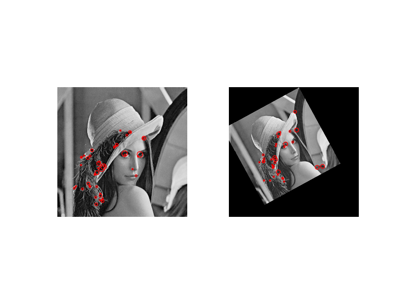

The CENSURE feature detector is a scale-invariant center-surround detector (CENSURE) that claims to outperform other detectors and is capable of real-time implementation.
from skimage import data
from skimage import transform as tf
from skimage.feature import CENSURE
from skimage.color import rgb2gray
import matplotlib.pyplot as plt
img1 = rgb2gray(data.lena())
tform = tf.AffineTransform(scale=(1.5, 1.5), rotation=0.5,
translation=(150, -200))
img2 = tf.warp(img1, tform)
detector = CENSURE()
fig, ax = plt.subplots(nrows=1, ncols=2)
plt.gray()
detector.detect(img1)
ax[0].imshow(img1)
ax[0].axis('off')
ax[0].scatter(detector.keypoints[:, 1], detector.keypoints[:, 0],
2 ** detector.scales, facecolors='none', edgecolors='r')
detector.detect(img2)
ax[1].imshow(img2)
ax[1].axis('off')
ax[1].scatter(detector.keypoints[:, 1], detector.keypoints[:, 0],
2 ** detector.scales, facecolors='none', edgecolors='r')
plt.show()
Python source code: download (generated using skimage 0.10.0)
IPython Notebook: download (generated using skimage 0.10.0)